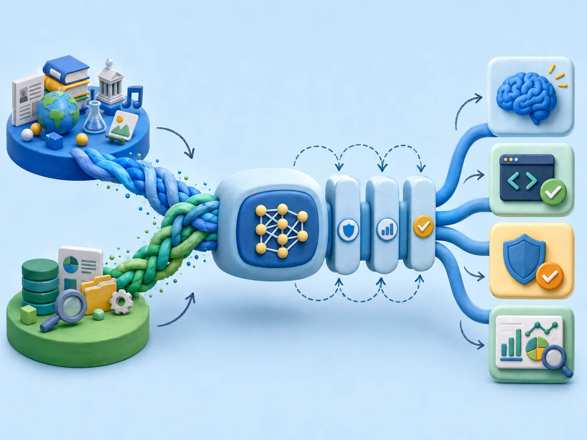

01
模型定制 · Nova Forge
让模型学会企业知识，又不忘掉原来的能力
PDF 先讲“灾难性遗忘”，再进入检查点与数据混合。关键不是把企业文档全部塞给模型，而是在可塑性与稳定性之间做可验证的取舍。
现场材料说什么
用中间检查点、持续预训练（CPT）、监督微调（SFT）和强化微调（RFT）进行领域适配，并同时观察通用能力回退。
官方文档校准
Nova Forge 提供开放训练检查点、Nova 精选数据混合、奖励函数与配方。数据混合比例没有固定答案，要以小规模对照实验寻找平衡。
企业决策问题
如果知识需要频繁更新，先考虑 RAG；只有当任务行为、领域语言或可验证推理需要改变时，才进入微调或 CPT。

训练方法怎么选
CPT 用于大量无标签领域语料；SFT 用高质量输入输出示例塑造任务行为；RFT 用可计算奖励优化多步决策。数据少、目标窄时优先参数高效微调；变化快、需要来源引用时优先 RAG。